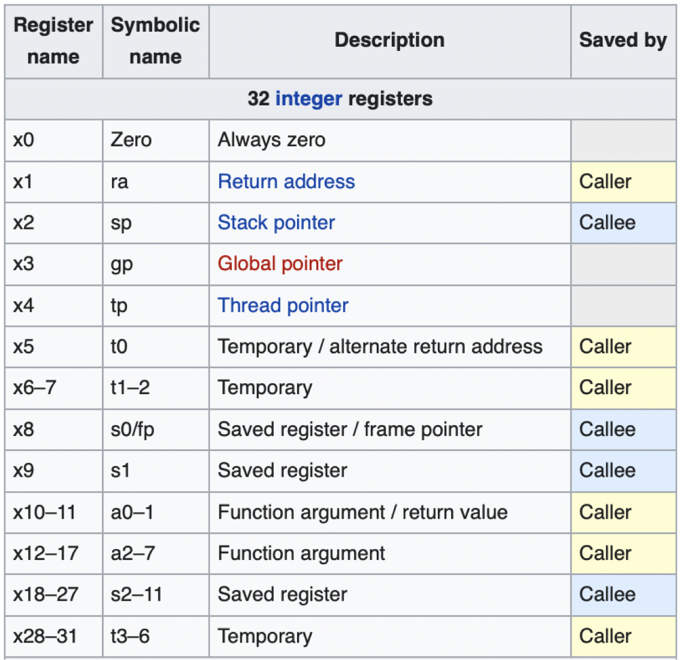

Where are old register values saved to restore them after function call?
- sp is the stack pointer in RISC-V(x2),x0 is zero and x1 is return address
- stack frame : the memory area that contains all the data for one function call, address grows downwards.
- an example of function call
|
|
|
|
- 当发生函数嵌套的情况是，只使用x1作为返回地址是危险的，因为内层函数会覆盖掉外层函数的返回地址，如何解决呢？
- 使用stack,将返回地址保存在stack frame中。
- caller: the calling function
- callee: the called function
Preserved across function call
- caller can rely on values being unchanged
- sp,gp,tp and “saved register” s0-s11(s0 is also fp)
Not preserved across function call
- caller cannot rely on values being unchanged
- Argument/return registers a0-a7,ra
- “temporary registers” t0-t6
- 反正就是保存寄存器的时机不同罢了，一个是在进入函数前保存，一个是在函数内保存，保存之后寄存器就可以随便使用了，最后再恢复。
- 所以在函数内部可以随便使用由调用者保存的寄存器，但是想要使用被调用者保存的寄存器就必须先自己保存一下。

Memory Allocation
- an example of stack
|
|
思考一下这里由于函数嵌套所以需要空出一个空间来放置返回地址， 然后由于这个嵌套函数的第二个参数不是原来的y所以需要空出一个空间来放置y。
|
|
- 三种数据存储，静态区，动态分配，栈区。
- 对于RV32来说，stack starts in high memory and grows down(bfff_fff0 and must be aligned on 16-byte boundary)
- RV32 programs(text segment) in low memory(0001_0000)
- static data segment(constants and other static variables) above text for static variables, global pointer(gp) points to static, rv32 gp = 1000_0000
- Heap above static for data structures that grow and shrink.
- what about the lowest area? Reserved for system call.
Lab3
来者不善
This lab is somewhat longer than the previous labs (and longer than most future labs as well). This is in order to give everyone a chance to get comfortable with writing RISC-V and using the Venus simulator before the release of project 2, which will require you to write a fair amount of assembly.
wsl2 — 此中苦，不足为外人道也😭，记得先看最后一句话!!!
- 我在写cs61c用的是本地的wsl2环境，发现这个lab3的网络配置很烦，使用20版本的venus.jar的时候一直连不上服务器，然后我就开始检查各种代理配置的是不是有问题，检查到最后发现这个版本的venus.jar运行时监听的端口只有127.0.0.1，问题是如果我们直接通过虚拟网络的网管172.XX.XX.XX来访问的话似乎linux不允许进入自己的回环地址。
- 二阶段是我使用wsl1，似乎它的网络和windows是打通的，所以可以直接访问，但是结果证明确实打通了，我在cmd中使用curl命令是可以返回200ok的，但是在浏览器中的venus界面使用mount local vmfs还是不行，不知道什么情况（也许是浏览器安全问题（http）？）
- 三阶段我用macbook也试了一下，还是不行，又换了一个20夏的venus.jar,还是不行😭
- 最后我换了一个22的venus.jar,并且用wsl1，终于可以了😭，事后检查发现确实它的监听窗口修改过了变成了0.0.0.0。
- 然后我又试了一下wsl2，直接用venus.jar网站是ok的，直接mount local vmfs就行了。
- 总结一下，这个坑太坑了，我被硬控一晚，建议大家直接使用wsl1然后使用22（或者新版）的venus.jar(可以直接用我的仓库里的)，这样直接访问127.0.0.1:6161也是行的。
|
|
- 如果你非要用wsl2的话，其实直接用venus网页直接就行了，此时如果你不方便用在线版的venus，可以尝试服务器自带的本地版，需要访问
http://localhost:6161，然后进入/venus本地代理即可和网页端一样,但问题是这个wsl2和windows隔离，所以（除非你用wsl2自己的浏览器）否则你需要配置一个端口转发，可以使用下面的powershell命令：
|
|
- 其中<WSL_IP_ADDRESS>可以通过在wsl2中运行
ip addr命令来查看，一般是类似172.XX.XX.XX的地址。
|
|
- 或者直接在浏览器中访问http://<WSL_IP_ADDRESS>:6161也是可以的，比如我的wsl2的ip地址是172.21.211.127，我就是直接访问http://172.21.211.127:6161的。
- 还有最简单的方法，什么挂载统统滚蛋，直接cv本地文件到网页用不就行了吗😂。
exercies 1
就是一个斐波那契数列，输出34。 n的地址是0x10000010. 修改t3寄存器的值为13即可得到第13个斐波那契数233。
exercise 2
- t0 用来存放k。
- s0 用来存放sum。
- The register acting as the pointer to the source and dest is s1 and s2
- how the pointer be updated?
|
|
- run 最后的结果可以通过查看s2的寄存器得到dest的地址然后可以发现dest的内容已经全部被source的前k个元素复制过去了。
exercise 3
- 写一个阶乘函数,使用递归方法实现。
|
|
exercise 4
- 可以发现在naive_pow_loop or naive_pow_end labels中没有对s0进行保存和恢复操作，即不满足calling convention，这个是由于在一个函数过程内如果我们知道某个寄存器最终都会被恢复那么在函数内的标签中就可以不保存，节省开销。
- 为什么只有inc_arr需要保存ra呢，因为只有inc_arr会调用一个help_fn函数，作为caller它需要保存自己的返回地址放置被覆盖。
- 不要忘了运行java -jar tools/venus.jar -cc lab03/factorial.s 检查一下。
exercise 5
- 补充一下la指令，它是load address的缩写，用来将一个标签的地址加载到寄存器中。
|
|
感受
写完了对寄存器的save和restore有了更加深入的理解，尤其是对于calling convention的理解。caller寄存器是调用者负责保存，它调用的函数可以自由的使用，储存中间计算状态，减少内存的使用；callee寄存器是被调用者负责保存，确保了一致性（外部函数不需要担心callee会修改这些寄存器的值），可以确保一些状态的一致性。